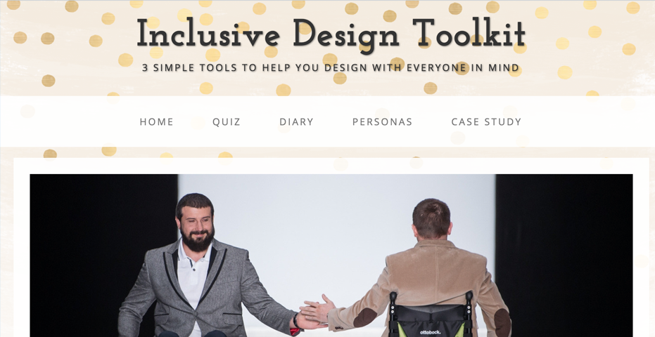
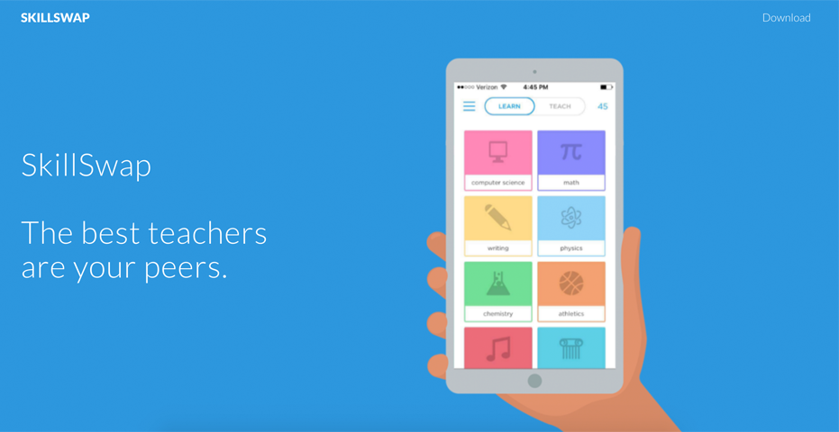

I'm currently a graduate student studying Computer Science with a concentration in Human Computer Interaction. I am interested in building anything and everything regarding transformative education, health, games, and storytelling. On a deeper level, I hope to design tools that will help people develop a better awareness and appreciation for themselves and the outside world.
Stanford University
GPA: 4.0
Minor in East Asian Studies
Stanford University
GPA: 3.6
Roblox
For two summers, I've had a deeply engaging hands-on internship with ROBLOX's product team. I honed my strategic and communication skills by attending scrums, writing specs, designing mock-ups, interviewing users, analyzing sales, conducting experiments, writing competitive analyses, and delivering pitches. Last summer, I worked one-on-one with the C-level executives of the company to help design a new international initiative.
Stanford Undergraduate Research Internship in C.S.
I was on a team of four undergraduates researching alternative ways to get young students more excited about Computer Science. We created an engaging online platform that combines personality quizzes with personalized projects. I specialized in conducting over 140 user studies and developing an easy-to-use coding environment.
Stanford Girl Code
I was one of two full-time workshop assistants in a summer introductory programming class of about 25 high school students. During the class, we used both Alice and Java to teach fundamental concepts and help them build projects catered to their interest and skill level. Our fundamental goal was to give our students the confidence to explore their interests and take a computer science class when they enter college.
Stanford Common Origins Dance Team
I was one of two co-presidents of a 40+ members non-audition dance team. My duties include organizing and teaching practices 2-3 times a week, planning retreats, coordinating performances, managing funds, etc. Every year, we produce a large dance showcase featuring both on-campus and off-campus groups with an average attendance of over 1000 people.
Common Origins, XTRM, and Eclipse Dance Team
I have been a choreographer for various dance teams, which involves teaching choreography, blocking formations, and cleaning pieces until they are performance-ready. My teams have been featured multiple times on TV, amassed tens of thousands of views on YouTube, and received awards for international dance competitions.
Programming Methodology
Programming Abstractions in C++
Computer Organization and Systems
Principles of Computer Systems
Research Project in Software Systems and Security
Linear Algebra and Differential Calculus
Ordinary Differential Equations for Engineers
Mathematical Foundations of Computing
Intro to Probability for Computer Scientists
Design and Analysis of Algorithms
Introductory Electronics
Intro to Human-Computer Interaction Design
Intro to Computer Graphics and Imaging
Web Applications
Human-Computer Interaction Design Studio
Understanding Users
Transformative Design
Design Leadership
Interactive Computer Graphics
User Experience Design Project
Computer and Network Security
Beyond Pink and Blue: Gender in Tech
HTML/CSS
JavaScript
C/C++
Design
User Research
Spec Writing

Beyond Pink and Blue: Gender in Tech
Designed a toolkit to help clothing designers and community managers design inclusive clothing and dress codes.

User Experience Design Project
Designed an iPhone app that forms a network of students helping each other with instant, face-to-face learning.
Design Leadership
Led a team of 4 directors through a 2 month long design project on innovative methods to improve patient experience using Stanford's design thinking.